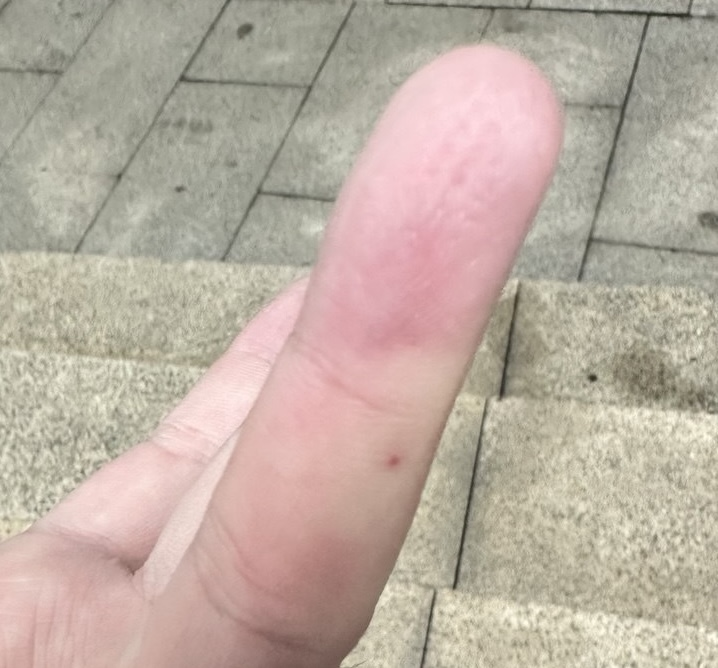
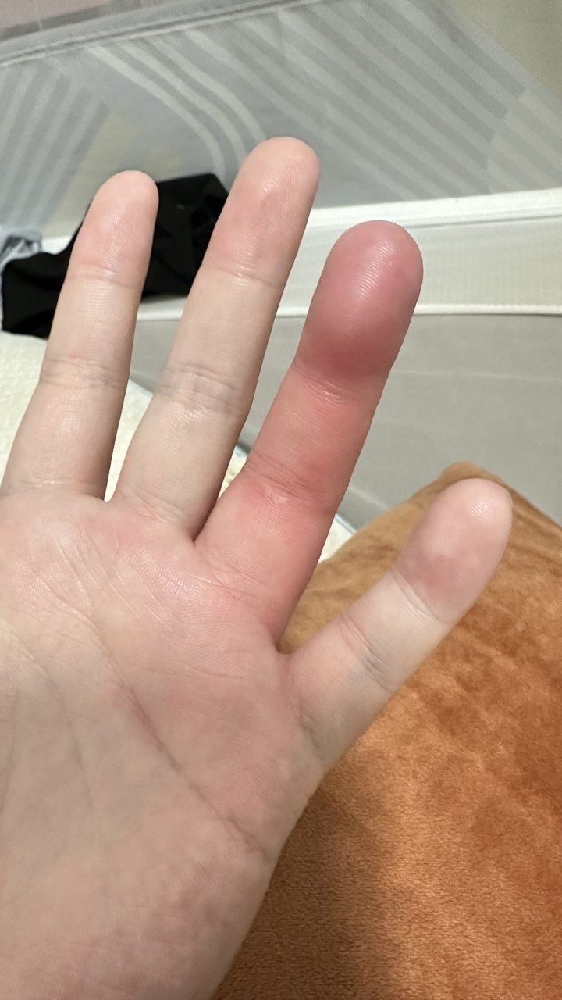
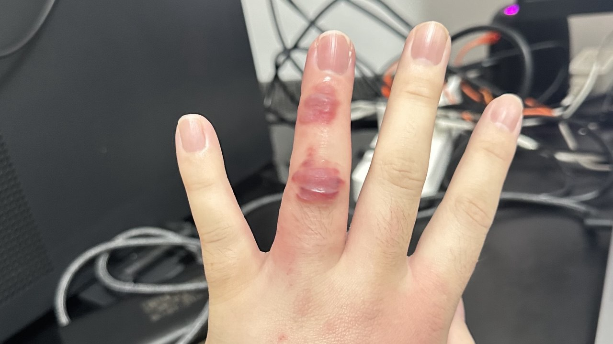
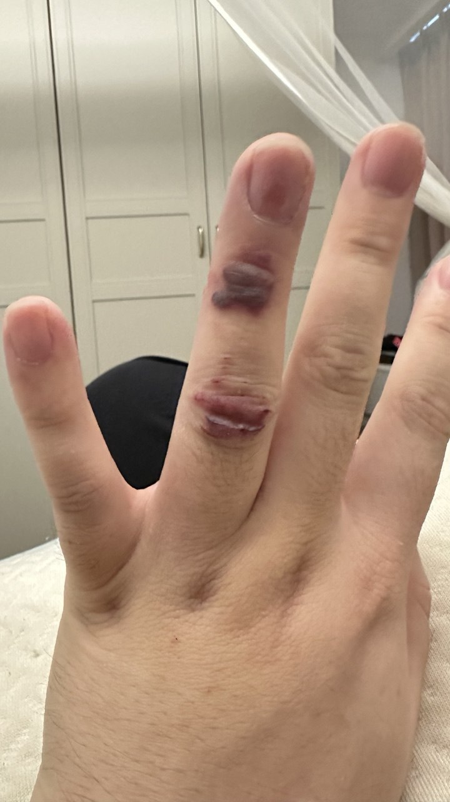
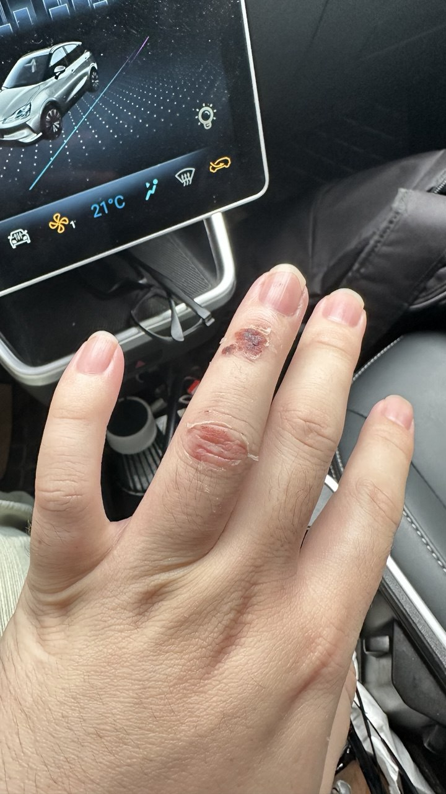

"एक मधुमक्खी के काटने की घटना और ठीक होना" | मूल, AI द्वारा अनुवादित
मुझे 1 जुलाई, 2025 को एक मधुमक्खी ने काट लिया। दो हफ्ते बाद, लगभग 15 जुलाई, 2025 तक, मेरी उंगली काफी हद तक ठीक हो गई। सबसे दर्दनाक पल शायद 2 जुलाई और 3 जुलाई थे, काटने के बाद के दो दिन।
एक दोस्त के निमंत्रण पर, मैं झेंगचेंग में बाईहुआ रिसॉर्ट होटल गया था तैरने के लिए। मैंने पानी के ऊपर कुछ तैरते हुए देखा। क्योंकि मेरे तैराकी चश्मे प्रिस्क्रिप्शन वाले नहीं थे, इसलिए मुझे स्पष्ट रूप से नहीं दिखा। इसलिए, मैंने अपने हाथ का उपयोग करके पता लगाने की कोशिश की कि वह क्या था और उसे पूल से बाहर फेंकने का इरादा किया।
हालांकि, जैसे ही मैंने उसे छुआ, मुझे काट लिया गया। एकाएक पछतावा का एहसास हुआ। सब कुछ बहुत तेज़ी से हुआ—कुछ सेकंडों में ही—एक दुर्घटना हुई। कुछ पल पहले, मैं खुश और शांत था; कुछ पल बाद, मेरी उंगली में दर्द शुरू हो गया।
एक मधुमक्खी जब आपको काटती है, तो आपकी उंगली तुरंत प्रतिक्रिया देती है, और काटे गए क्षेत्र में कुछ एलर्जी प्रतिक्रिया हो सकती है। मैं अस्पताल जाने के लिए चाहता था। बाद में, मैंने JD.com से एक ऑनलाइन डॉक्टर से सलाह ली। उन्होंने मुझे बताया कि खुद से सूजन वाले क्षेत्र से खून या द्रव को निकालने की कोशिश करना उचित नहीं है। इसके बजाय, मुझे एक डॉक्टर से मिलना चाहिए ताकि यह एक साफ, बैक्टीरिया-मुक्त वातावरण में किया जा सके।
मैं नहीं गया और कुछ और दिनों तक इंतजार किया। फिर मैंने देखा कि त्वचा अपने आप से थोड़ी टूटने लगी और द्रव निकलने लगा। मैंने एक सुई का उपयोग करके खुलने को बढ़ाने के लिए किया।
स्रोत: स्व-प्राप्त
 स्रोत: स्व-प्राप्त
 स्रोत: स्व-प्राप्त
 स्रोत: स्व-प्राप्त
 स्रोत: स्व-प्राप्त
 स्रोत: स्व-प्राप्त